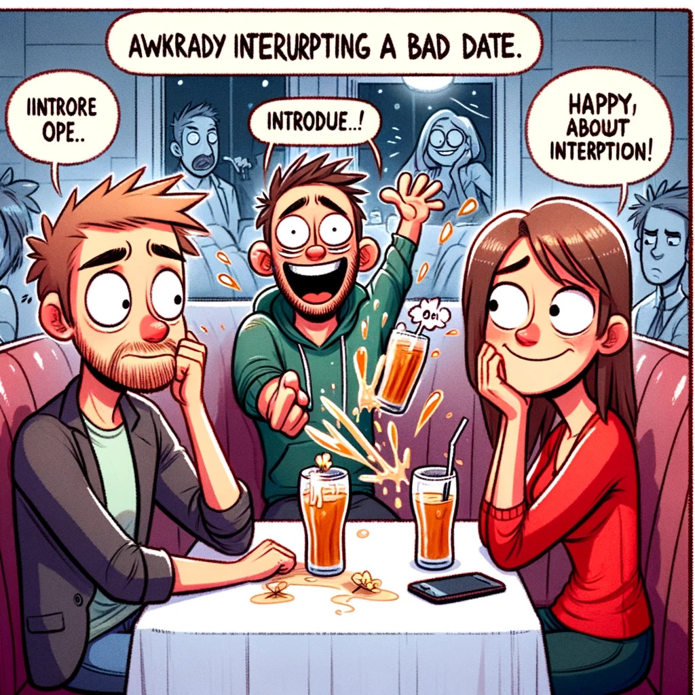
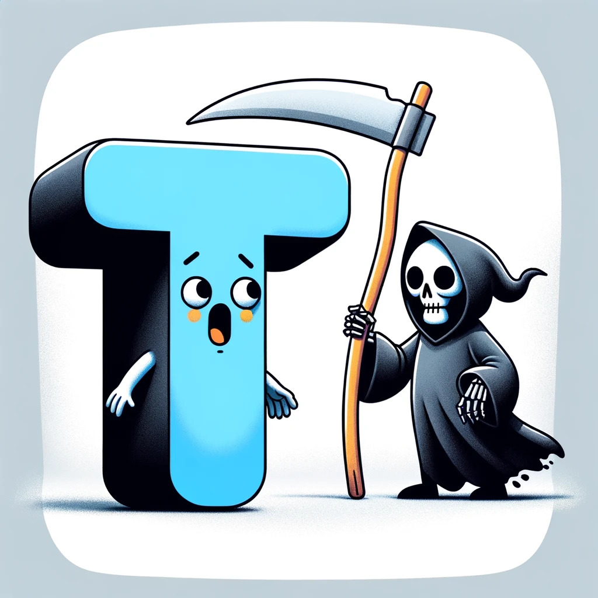
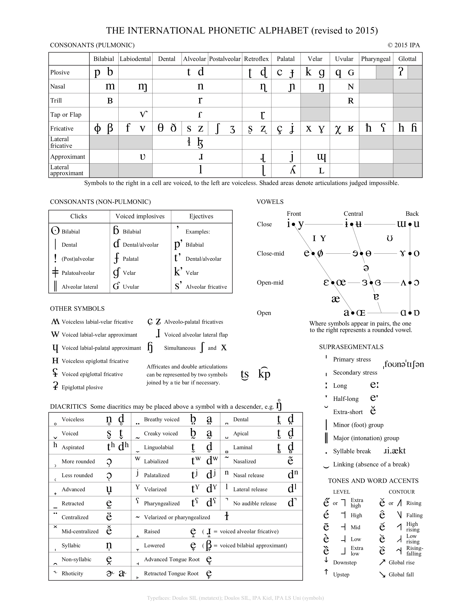

Study Groups aren’t
always a good idea!
Sometimes it can help to teach and learn from others
Don’t trust an answer you don’t fully understand
- “What’s the answer?” is dangerous, “Why is that the answer?” might
save you.
Bad answers often ‘go viral’
The very best study group is office hours!
Phonology:
The Sound Patterns of Language are awesome
Matt Zaslansky - LIGN 101
Today’s Plan
Reviewing Phonemic Analysis
From last time…
Cool. So… how do we do
phonemic analysis?
Step 0: Check for minimal
pairs
If you have a minimal pair where the meaning changes, the sounds are
different phonemes and your work is done. Always.
If
you have a minimal pair, the sounds are different phonemes and your work
is done.
Phonemic Analysis in four
easy steps!
0: Check for Minimal Pairs, if none…
1: Collect all the environments the sound you’re interested in
can occur in
2: State the distribution of the sounds.
3: Decide which allophone is the basic underlying
form
4: Write rules to derive the other allophone(s) from it based on
environment
0: Check for Minimal Pairs, if
none…
1:
Collect all the environments the sound you’re interested in can occur
in
2: State the distribution
of the sounds.
4:
Write rules to derive the other allophone(s) from it based on
environment
- We’ll talk about writing rules more shortly
All sorts of
environments trigger changes
Phonological Rules
They’re in a complementary distribution
You can predict which one will show up based on the
environment
How do I express that prediction to somebody
else?
Phonological Rules
You describe the distribution of the allophones of a phoneme with
phonological rules
An [r] in English?
Video is from Jynxi
So when Jynxi says [fɪɹst klɪpərə ivnɪŋ], which is a plausible rule for [r]?
[r] -> /ɹ/ / V__V
/ɹ/ -> [r] / V__V
/d/ -> [r] / V__V
/d/ -> [r] / C__C
[r] -> /d/ / C__C
So when Jynxi says [fɪɹst klɪpərə ivnɪŋ], which is a plausible rule for [r]?
[r] -> /ɹ/ / V__V
/ɹ/ -> [r] / V__V
/d/ -> [r] / V__V
/d/ -> [r] / C__C
[r] -> /d/ / C__C
“X turns into Y in environment Z”
“X -> Y” means “X turns into Y”
- -> is an arrow, but just easier to type.
Then the “/” which means “in the environment”
Then you add a blank, representing where the sound goes that’s
getting transformed “__”
… And you position that blank relative to the conditioning
environment.
All of this is on
your quick reference chart
A Phoneme
The Smallest Contrastive Unit of Sound in a language, in a
contrastive distribution with other phonemes in the
language
Changing phonemes changes meanings, and is perceptible (and often
confusing!) for listeners of a language
Changing between phonemes creates…
Minimal Pairs
Two words with different meanings which differ by a single sound,
indicating that those sounds are different
phonemes
Think “boot” and “boon”, or “Niña” and “Piña”
Allophones of a Phoneme
Different surface-level expressions of the same phoneme, which
alternate depending on the environment, in a complementary
distribution
Which allophone you get is dictated by a rule
Think about [ej] and [ej:] or the many realizations of /t/ in
English
The sound which you decide is the ‘base’ form, from which rules
create the other allophones
This is a strategic decision. Choose the form that lets
you write the fewest, cleanest rules.
Allomorphs
Different versions of morphemes which are swapped predictably
based on the sound environment.
Think the many plurals of English,
Free Variation
Where a group of sounds can replace each other, or not, and
there’s no pattern, just chaos
Don’t worry about this for LIGN 101, we won’t give you
Free Variation on homeworks or exams
Sounds have
relationships with one another
They can be independent phonemes
They can be rule-governed allophones
They can chaotically switching free variation
Signs that
two sounds represent different phonemes
Signs
that two sounds are allophones of the same phoneme
Changing the environment causes the sounds to
alternate
The two sounds are predictable
- “Huh, this one always occurs in that environment!”
Speakers hear switching between them as ‘a different way of
saying’ the same thing
- Or maybe don’t hear the difference at all
We
write phonological rules to describe where allophones occur
- These rules tell us when some or all of the forms
occur
Aside:
Schwa is always an allophone of another vowel
Schwa (/ə/) is a reduced form of a different vowel
- Photograph, the, con’vict
Wedge (/ʌ/) is a specific vowel, with its own identity
- Not a reduced form of something else
So, now we know how
alternations work!
… but why do alternations
occur anyways?
Common Phonological
Processes
So, now we
know how to describe all these crazy rules…
… but what do
languages actually DO with them?!
Four Common Types
of Phonological Processes
Assimilation
Dissimilation
Insertion / Epenthesis
Deletion / Elision
1) Assimilation
Example: Nasal Place
Assimilation
“Come on, we’re all being dental, you should try it
too!”
“Pine thugs” -> [pajn̪ θʌgz]
“Pine guys” -> [pajŋ gajz]
Extreme Example: Nasal
Harmony
Extreme Example: Vowel
Harmony
When vowels change to match the other vowels in the word
Turkish has back-front
vowel harmony
This means that vowels in a word must be either all back or
all front
Turkish
Turkic - Turkey
Türkiye’-dir - ‘it is Turkey’
kapı-dır - ‘it is the door’
gül-dür - ‘it is the rose’
palto-dur - ‘it is the coat’
The vowel in the last syllable changes depending on the other
vowels!
2) Dissimilation
Example: Liquid Dissimilation
The third rural bird juror murderer demurred.
“Colonel” is pronounced /kəɹnəl/
“Purple” comes from “purpure”
“surprise” /səɹpɹajz/ is usually /səpɹajz/, same with “berserk”
and “february”
- This is deletion, done for dissimilation reasons
3) Insertion / Epenthesis
When a sound pops up to prevent an awkward or undesirable
combination
Basically, showing up on a friend’s bad date

Example: Allomorphs with
vowels
4) Deletion / Elision
When a sound is removed to stop an awkward or undesirable
combination from occurring
Basically, uninviting your friend’s ex from the party

Example: Elision in English
Fifth, /fɪfθs/ -> [fɪθs]
Family, /fæmɪli/ -> [fæmli]
Natural, /næt͡ʃəɹəl/ -> [næt͡ʃɹəl]
Four Common Types
of Phonological Processes
Assimilation (Peer Pressure)
Dissimilation (Rebellion)
Insertion / Epenthesis (Showing up on a friend’s date)
Deletion / Elision (Uninviting and unfriending)
There are other
phonological processes
I’m humanizing these
patterns for a reason
- Before you start looking for a pattern, think about what’s changing,
arising, or deleting, and what kinds of things might trigger it
If
a language changes /d/ to [t] next to a voiceless C, that’s an example
of…
Assimilation
Dissimilation
Insertion / Epenthesis
Deletion / Elision
If
a language changes /d/ to [t] next to a voiceless C, that’s an example
of…
Assimilation
Dissimilation
Insertion / Epenthesis
Deletion / Elision
What kinds of things
trigger these changes?
Natural Classes
Plural Patterns in English
A few reasons why
listing sounds is no good
Relationships among
speech sounds are real
Phonology is not just algebra with symbols
Your IPA chart is not just an arbitrary scattering of
sounds
Phonetic motivation for changes is often based on
geography
Relationships can
be described in many ways
- … but the easiest way to start thinking is in terms of…
Natural Classes!
Let’s play a game!

One of these sounds
is not like the other…
/t/ /k/ /p/ /s/
- /s/ is the only fricative, all the rest are voiceless stops
/m/ /n/ /ŋ/ /b/
- /b/ is the only oral sound, all the rest are nasal sounds
/b/ /a/ /ŋ/ /i/ /s/
/s/ is the only voiceless sound, all the rest are voiced
sounds
/n/ is the only nasal sound, all the rest are oral
/l/ /s/ /ŋ/ /j/ /i/
/i/ /ɪ/ /ɛ/ /æ/ /ɔ/
/ɔ/ is the only back vowel, all the rest are front
vowels
/ɔ/ is the only rounded vowel, all the rest are
unrounded
/t/ /n/ /s/ /z/ /k/
/p/ /t/ /k/ /b/
- /b/ is the only voiced stop
Natural Class
A set of speech sounds in a given language that is able to be
uniquely, completely, and succinctly described in terms of the shared
phonetic (“natural”) properties of its members.

Natural Class Examples
Voiceless stops (English & Spanish): [p, t, k]
Voiced fricatives (English): [v, ð, z, ʒ]
Voiced fricatives (Spanish): [β, ð, ɣ]
Front vowels (English): [iː, ɪ, eɪ, ɛ, æ]
Front vowels (Spanish): [i, e]
Natural
Classes in spoken languages are usually very IPA-like
Common rows, columns, or regions on the IPA chart
Anything where you can say ‘these share a feature in speech
production’
Knowing the IPA is hugely helpful in phonology!
Phonological
Rules typically involve natural classes
Natural classes can be the ‘targets’ of rules
- [p t k] are aspirated in English
Natural classes can ‘trigger’ rules
- [tʃ dʒ s ʃ z] trigger the [ɪz] plural
Very often, rules will act on groups of sounds which share
features
So, as you’re
writing your phonological rules…
Any questions?
Now, let’s try some datasets
What is the
relationship between [j] and [w] here?
|
Falsificato
|
English
|
Falsificato
|
English
|
|
iji
|
blacksmith
|
uwu
|
small
|
|
kaju
|
monster
|
jaja
|
laughter
|
|
howaj
|
sacred
|
buwe
|
marker
|
|
owowi
|
surprise
|
jobowni
|
person
|
DO NOT LOOK
AT THIS UNTIL YOU’VE WORKED THE PROBLEM
/j/ -> [w] / [rounded
vowels]___
This implies that ‘/j/ -> [j] / everywhere else’
You don’t have to write the second part, it’s assumed
What is the
relationship between [t] and [d] here?
|
Fakodata
|
English
|
Fakodata
|
English
|
|
taʃa
|
kitten
|
svitat
|
bird
|
|
pladna
|
tack
|
padme
|
princess
|
|
midna
|
companion
|
tatanka
|
buffalo
|
|
redmat
|
rhythm
|
krita
|
painter
|
|
sitka
|
tree
|
gjatzo
|
ocean
|
DO NOT
LOOK AT THIS UNTIL YOU’VE WORKED THE PROBLEM
/t/ -> [d] / ___[nasals]
- This implies that ‘/t/ -> [t] / everywhere else’
What’s the relationship
between [d] and [j]?
|
Falsificato
|
English
|
Falsificato
|
English
|
|
iji
|
blacksmith
|
dadeja
|
paternity
|
|
jadas
|
talking
|
jowonda
|
vision
|
|
kaju
|
monster
|
sijesda
|
sleep
|
|
hodil
|
invest
|
buwed
|
markers
|
|
meda
|
technocrat
|
jajas
|
laughing
|
DO NOT
LOOK AT THIS UNTIL YOU’VE WORKED THE PROBLEM
/d/ and /j/ are different
phonemes
What’s the
relationship between [t] and [s] here?
|
Beeyessa
|
English
|
Beeyessa
|
English
|
Beeyessa
|
English
|
|
tint
|
dark
|
asint
|
less dark
|
intint
|
darker
|
|
tas
|
fast
|
asas
|
less fast
|
intas
|
faster
|
|
tust
|
terrifying
|
asust
|
less terrifying
|
intust
|
more terrifying
|
|
tontin
|
cute
|
asontin
|
less cute
|
intontin
|
more cute
|
|
tejki
|
nerdy
|
asejki
|
less nerdy
|
intejki
|
nerdier
|
DO NOT
LOOK AT THIS UNTIL YOU’VE WORKED THE PROBLEM
/t/ -> [s] / V___
This is the best answer
[t] shows up in many more contexts than [s], so it’s
underlying!
It is incorrect to say something like ‘/t/ becomes [s] in ’less’
words’.
- Phonology just worries about sounds
Next time
- We’ll wrap up phonology, and talk about how words work
Thank you!